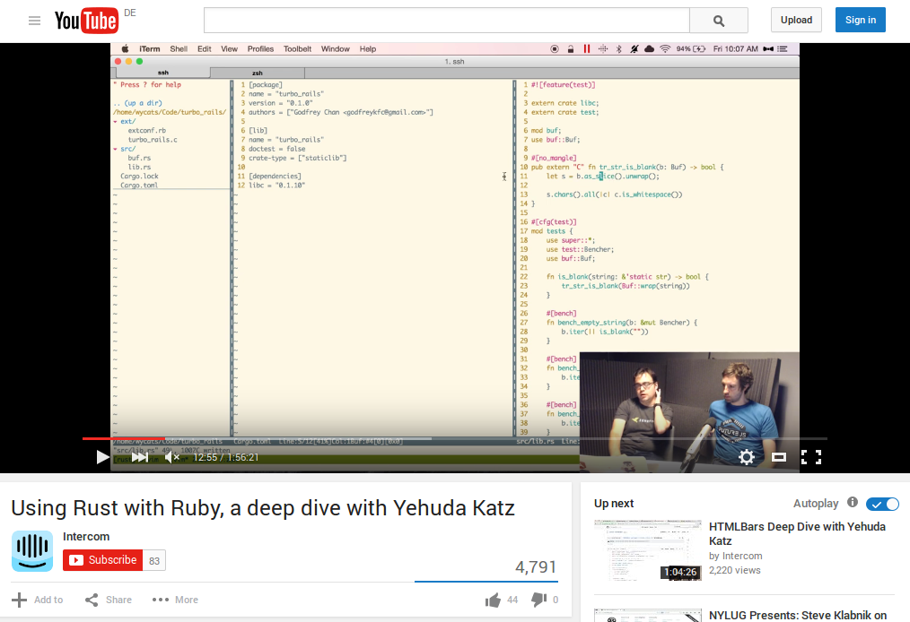
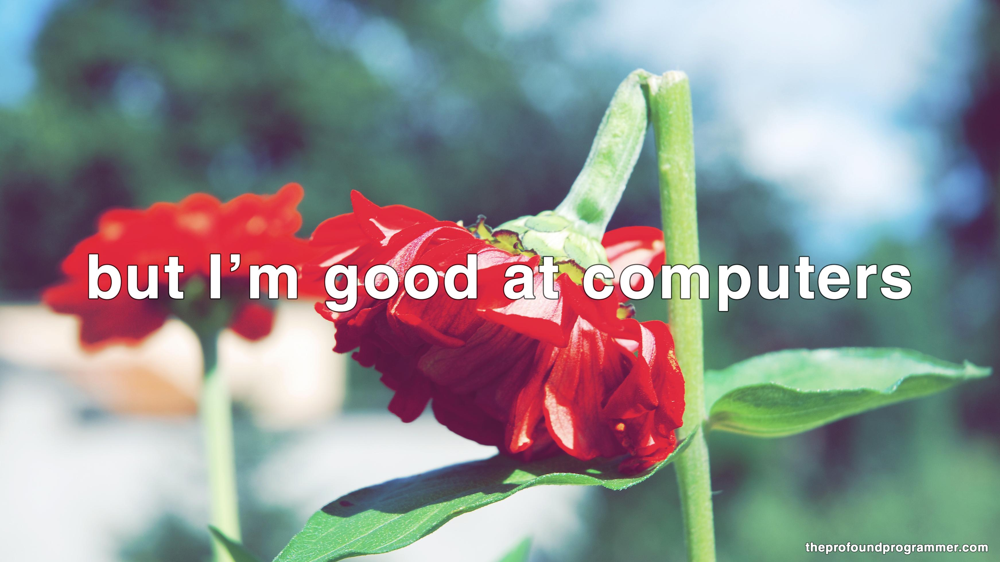

class String
BLANK_RE = /\A[[:space:]]*\z/
def blank?
BLANK_RE === self
end
end
static VALUE
rb_str_blank_as(VALUE str)
{
rb_encoding *enc;
char *s, *e;
enc = STR_ENC_GET(str);
s = RSTRING_PTR(str);
if (!s || RSTRING_LEN(str) == 0) return Qtrue;
e = RSTRING_END(str);
while (s < e) {
int n;
unsigned int cc = rb_enc_codepoint_len(s, e, &n, enc);
switch (cc) {
case 9:
case 0xa:
case 0xb:
case 0xc:
case 0xd:
case 0x20:
case 0x85:
case 0xa0:
case 0x1680:
case 0x2000:
case 0x2001:
case 0x2002:
case 0x2003:
case 0x2004:
case 0x2005:
case 0x2006:
case 0x2007:
extern crate libc;
mod buf; // a small buffer struct + impl, not shown
use buf::Buf;
#[no_mangle]
pub extern "C" fn tr_str_is_blank(b: Buf) -> bool {
let s = b.as_slice().unwrap();
s.chars().all(|c| c.is_whitespace())
}
